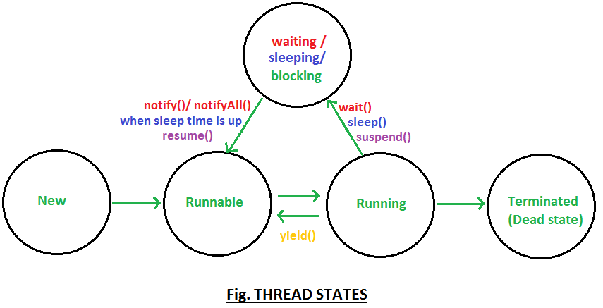

<!DOCTYPE html>
<html>
<head>
	<style type="text/css">
	.redC
	{
	color:red
	}
	.blueC
	{
	color:blue;
	}
	.aa
	{
	color:blue;
	}
	</style>
</head>
<meta http-equiv="Content-Type" content="text/html; charset=UTF-8">
<a href="https://dzone.com/articles/threads-top-80-interview">Top 80 Thread- Java Interview Questions and Answers (Part 1)</a><br/>
<a href="https://dzone.com/articles/top-80-thread-java-interview-0">Top 80 Thread- Java Interview Questions and Answers (Part 2)</a><br/>
<p><b class="redC">Question 1.</b>What is difference between starting thread with run() and start() method? (Important)</p> 
<p><font class="redC">Answer.</font> This is quite interesting question, it might confuse you a bit and at time may make you think is there really any <a href="http://www.javamadesoeasy.com/2015/03/difference-between-starting-thread-with.html" style="text-decoration:none;" rel="nofollow">difference between starting thread with run() and start() method</a>.</p> 
<p>When you call start() method, main thread internally calls run() method to start newly created Thread, so run() method is ultimately called by newly created thread.</p> 
<p>When you call run() method main thread rather than starting run() method with newly thread it start run() method by itself.</p> 

<p><b class="redC">Question 2.</b> What is life cycle of Thread, explain thread states? (Important)</p> 
<p><font class="redC">Answer.</font> &nbsp;<a href="http://www.javamadesoeasy.com/2015/03/thread-states-thread-life-cycle-in-java.html" style="text-decoration:none;" rel="nofollow">Thread states/ Thread life cycle</a> is very basic question, before going deep into concepts we must understand Thread life cycle.</p> 
<p><font class="redC">Thread have following states</font></p> 
<ul> 
 <li> <p>New</p> </li> 
 <li> <p>Runnable</p> </li> 
 <li> <p>Running</p> </li> 
 <li> <p>Waiting/blocked/sleeping</p> </li> 
 <li> <p>Terminated (Dead) </p> </li> 
</ul> 
<p>Thread states/ Thread life cycle in diagram</p> 
<p></p> 
<p class="redC">Thread states in detail</p> 
<p><font class="redC">New :</font> When instance of thread is created using new operator it is in new state, but the start() method has not been invoked on the thread yet, thread is not eligible to run yet.</p> 
<p><font class="redC">Runnable : </font>When start() method is called on thread it enters runnable state. </p> 
<p><font class="redC">Running : </font>Thread scheduler selects thread to go fromrunnable to running state. In running state Thread starts executing by entering run() method.</p> 
<p><font class="redC">Waiting/blocked/sleeping :</font> In this state a thread is not eligible to run. </p> 


<p>&#07;Thread is still alive, but currently it’s not eligible to run. In other words.</p> 
<p>&#07;How can Thread go from running to waiting state?</p> 
<p> &nbsp;By calling wait()<a href="http://www.javamadesoeasy.com/2015/03/wait-and-notify-methods-definition-8.html" style="text-decoration:none;" rel="nofollow">method</a> thread go from running to waiting state. In waiting state it will wait for other threads to release object monitor/lock. </p> 
<p>&#07;How can Thread go from running to sleeping state?</p> 
<p> &nbsp;By calling sleep() <a href="http://www.javamadesoeasy.com/2015/03/sleep-method-in-threads-10-key-features.html" style="text-decoration:none;" rel="nofollow">method</a>thread go from running to sleeping state. In sleeping state it will wait for sleep time to get over.</p> 
<p>Terminated (Dead) : A thread is considered dead when its run() method completes.</p>

 
<p><b class="redC">Question 3.</b> what is significance of yield() method, what state does it put thread in?</p> 
<p><font class="redC">Answer.</font> <a href="http://www.javamadesoeasy.com/2015/03/yield-method-in-threads-8-key-features.html" style="text-decoration:none;" rel="nofollow">yield()</a> is a native method it’s implementation in java 6 has been changed as compared to its implementation java 5. As method is native it’s implementation is provided by JVM.</p> 
<p>In java 5, yield() method internally used to call <a href="http://www.javamadesoeasy.com/2015/03/sleep-method-in-threads-10-key-features.html" style="text-decoration:none;" rel="nofollow">sleep()</a> method giving all the other threads of same or higher priority to execute before yielded thread by leaving allocated CPU for time gap of 15 millisec.</p> 
<p>But java 6, calling yield() method gives a hint to the thread scheduler that the current thread is willing to yield its current use of a processor. The thread scheduler is free to ignore this hint. So, sometimes even after using yield() method, you may not notice any difference in output.</p>

 
<p class="redC">salient features of <a href="http://www.javamadesoeasy.com/2015/03/yield-method-in-threads-8-key-features.html" style="text-decoration:none;" rel="nofollow">yield()</a> method &gt;</p> 
<ul> 
 <li> <p>Definition : <a href="http://www.javamadesoeasy.com/2015/03/yield-method-in-threads-8-key-features.html" style="text-decoration:none;" rel="nofollow">yield()</a> method when called on thread gives a hint to the thread scheduler that the current thread is willing to yield its current use of a processor.The thread scheduler is free to ignore this hint.</p> </li> 
</ul> 
<ul> 
 <li> <p><a href="http://www.javamadesoeasy.com/2015/03/thread-states-thread-life-cycle-in-java.html" style="text-decoration:none;" rel="nofollow">Thread state</a> : when yield() method is called on thread it goes from running to runnable state, not in waiting state. Thread is eligible to run but not running and could be picked by scheduler at anytime.</p> </li> 
</ul> 
<ul> 
 <li> <p>Waiting time : yield() method stops thread for unpredictable time.</p> </li> 
</ul> 
<ul> 
 <li> <p>Static method : yield()is a static method, hence calling Thread.yield() causes currently executing thread to yield.</p> </li> 
</ul> 
<ul> 
 <li> <p>Native method : implementation of yield() method is provided by JVM.</p> </li> 
</ul> 
<p>Let’s see definition of yield() method as given in java.lang.Thread -</p> 
<div> 
 <table> 
  <tbody> 
   <tr> 
    <td> <p class="redactor-current-td">public static native void yield();</p> </td> 
   </tr> 
  </tbody> 
 </table> 
</div> 
<ul> 
 <li> <p><a href="http://www.javamadesoeasy.com/2015/03/synchronization-blocks-and-methods.html" style="text-decoration:none;" rel="nofollow">synchronized block</a> : thread need not to to acquire object lock before calling yield()method i.e. yield() method can be called from outside synchronized block.</p> </li> 
</ul> 
<p><b class="redC">Question 4.</b> Differences and similarities between yield() and sleep()?</p> 
<p class="redC">Answer.</p> 
<p>Differences <a href="http://www.javamadesoeasy.com/2015/03/yield-method-in-threads-8-key-features.html" style="text-decoration:none;" rel="nofollow">yield()</a> and <a href="http://www.javamadesoeasy.com/2015/03/sleep-method-in-threads-10-key-features.html" style="text-decoration:none;" rel="nofollow">sleep()</a> :</p> 
<ul> 
 <li> <p>Definition : yield() method when called on thread gives a hint to the thread scheduler that the current thread is willing to yield its current use of a processor.The thread scheduler is free to ignore this hint. sleep() methods causes current thread to sleep for specified number of milliseconds (i.e. time passed in sleep method as parameter). Ex- Thread.sleep(10) causes currently executing thread to sleep for 10 millisec.</p> </li> 
</ul> 
<ul> 
 <li> <p><a href="http://www.javamadesoeasy.com/2015/03/thread-states-thread-life-cycle-in-java.html" style="text-decoration:none;" rel="nofollow">Thread state</a> : when sleep() is called on thread it goes from running to waiting state and can return to runnable state when sleep time is up. when yield() method is called on thread it goes from running to runnable state, not in waiting state. Thread is eligible to run but not running and could be picked by scheduler at anytime.</p> </li> 
</ul> 
<ul> 
 <li> <p>Exception : yield() method need not to catch or throw any exception. But sleep() method must catch or throw compile time exception i.e. InterruptedException.</p> </li> 
</ul> 
<ul> 
 <li> <p>Waiting time : yield() method stops thread for unpredictable time, that depends on thread scheduler. But sleep() method have got few options.</p> </li> 
 <ol> 
  <li> <p>sleep(long millis) - Causes the currently executing thread to sleep for the specified number of milliseconds</p> </li> 
  <li> <p>sleep(long millis, int nanos) - Causes the currently executing thread to sleep for the specified number of milliseconds plus the specified number of nanoseconds.</p> </li> 
 </ol> 
</ul> 
<p>similarity between <a href="http://www.javamadesoeasy.com/2015/03/yield-method-in-threads-8-key-features.html" style="text-decoration:none;" rel="nofollow">yield()</a> and <a href="http://www.javamadesoeasy.com/2015/03/sleep-method-in-threads-10-key-features.html" style="text-decoration:none;" rel="nofollow">sleep()</a>:</p> 
<p>&#07; yield() and sleep() method belongs to java.lang.Thread class.</p> 
<p>&#07; yield() and sleep() method can be called from outside synchronized block. </p> 
<p>&#07; yield() and sleep() method are called on Threads not objects.</p>

 
<p><b class="redC">Question 5.</b> Mention some g<a href="http://www.javamadesoeasy.com/2015/03/guidelines-to-thread-safe-code-most.html" style="text-decoration:none;" rel="nofollow">uidelines to write thread safe code, most important point we must take care of in multithreading programs?</b></p> 
<p><font class="redC">Answer. &nbsp;</font>In multithreading environment it’s important very important to <a href="http://www.javamadesoeasy.com/2015/03/guidelines-to-thread-safe-code-most.html" style="text-decoration:none;" rel="nofollow">write thread safe code</a>, thread unsafe code can cause a major threat to your application. I have posted many articles regarding thread safety. So overall this will be revision of what we have learned so far i.e. writing thread safe healthy code and avoiding any kind of <a href="http://www.javamadesoeasy.com/2015/03/deadlock-in-multithreading-program-to.html" style="text-decoration:none;" rel="nofollow">deadlocks</a>.</p> 
<ol> 
 <p><b class="redC">&#07;</b>&nbsp;If method is exposed in multithreading environment and it’s not synchronized (thread unsafe) than it might lead us to <a href="http://www.javamadesoeasy.com/2015/03/race-condition-in-multithreading-and.html" style="text-decoration:none;" rel="nofollow">race condition</a>, we must try to use <a href="http://www.javamadesoeasy.com/2015/03/synchronization-blocks-and-methods.html" style="text-decoration:none;" rel="nofollow">synchronized block and synchronized methods</a>. <a href="http://www.javamadesoeasy.com/2015/03/suppose-you-have-2-threads-thread-1-and_5.html" style="text-decoration:none;" rel="nofollow">Multiple threads may exist on same object</a> but only one thread of that object can enter synchronized method at a time, though &nbsp;<a href="http://www.javamadesoeasy.com/2015/03/suppose-you-have-2-threads-thread-1-on.html" style="text-decoration:none;" rel="nofollow">threads on different object</a> can enter same method at same time.</p> 
</ol> 
<ol> 
  <p><b class="redC">&#07;</b>&nbsp;Even static variables are not thread safe, they are used in static methods and if static methods are not synchronized then thread on same or different object can enter method concurrently. Multiple threads may exist on <a href="http://www.javamadesoeasy.com/2015/03/suppose-you-have-2-threads-thread-1-and_46.html" style="text-decoration:none;" rel="nofollow">same</a> or <a href="http://www.javamadesoeasy.com/2015/03/suppose-you-have-2-threads-thread-1-on_5.html" style="text-decoration:none;" rel="nofollow">different objects</a> of class but only one thread can enter <a href="http://www.javamadesoeasy.com/2015/03/acquiring-lock-on-class-2-ways-to.html" style="text-decoration:none;" rel="nofollow">static synchronized method</a> at a time, we must consider making <a href="http://www.javamadesoeasy.com/2015/03/acquiring-lock-on-class-2-ways-to.html" style="text-decoration:none;" rel="nofollow">static methods as synchronized</a>.</p>
</ol> 
<ol> 
 <p><b class="redC">&#07;</b>&nbsp;If possible, try to use <a href="http://www.javamadesoeasy.com/2015/03/volatile-keyword-in-java-difference.html" style="text-decoration:none;" rel="nofollow">volatile variables</a>. If a field is declared volatile all threads see a consistent value for the variable. Volatile variables at times can be used as alternate to synchronized methods as well.</p> 
</ol>
 
<ol> 
 <p><b class="redC">&#07;</b>&nbsp;Final variables are thread safe because once assigned some reference of object they cannot point to reference of other object.</p> 
</ol> 

<p>s is pointing to String object.</p> 
<div>
 <pre class="brush:java"> public class MyClass {

final String s=new String("a");

 void method(){

 s="b"; //compilation error, s cannot point to new reference.

 }

 }</pre> 
</div> 
<p>If final is holding some primitive value it cannot point to other value.</p> 
<div>
 <pre class="brush:java"> public class MyClass {

final inti=0;

 void method(){

 i=0;  //compilation error, i cannot point to new value.

 }

 }</pre> 
</div> 
<ol> 
 <p><b class="redC">&#07;</b>&nbsp;Usage of local variables : If possible try to use local variables, local variables are thread safe, because every <a href="http://www.javamadesoeasy.com/2015/03/threads-implement-their-own-stack.html" style="text-decoration:none;" rel="nofollow">thread has its own stack</a>, i.e. every thread has its own local variables and its pushes all the local variables on stack.</p> 
</ol>
<pre class="brush:java"> public class MyClass {

 void method(){

 inti=0; //Local variable, is thread safe.

 }

 }
</pre>
<ol>
 <b class="redC">&#07;</b>&nbsp;Using thread safe collections : Rather than using ArrayList we must Vector and in place of using HashMap we must use ConcurrentHashMap or HashTable. </li> 
 <b class="redC">&#07;</b>&nbsp;We must use <a href="http://www.javamadesoeasy.com/2015/03/visualvm-thread-dumps-generating-and_74.html" style="text-decoration:none;" rel="nofollow">VisualVM</a> &nbsp;or <a href="http://www.javamadesoeasy.com/2015/03/jstack-thread-dumps-generating-and.html" style="text-decoration:none;" rel="nofollow">jstack</a> &nbsp;to detect problems such as deadlocks and time taken by threads to complete in multi threading programs.<br/> 
 <b class="redC">&#07;</b>&nbsp;Using <a href="http://www.javamadesoeasy.com/2015/03/threadlocal-in-multithreading-in-java.html" style="text-decoration:none;" rel="nofollow">ThreadLocal</a>:ThreadLocal is a class which provides thread-local variables. Every thread has its own ThreadLocal value that makes ThreadLocal value threadsafe as well. <br/>
 <b class="redC">&#07;</b>&nbsp;Rather than StringBuffer try using immutable classes such as String. Any change to String produces new String.<br/> 
</ol> 


<p><b class="redC">Question. 6</b> Difference between notify() and notifyAll() methods, can you write a code to prove your point?</p> 
<p><font class="redC">Answer.</font> Goodness. Theoretically you must have heard or you must be aware of differences between <a href="http://www.javamadesoeasy.com/2015/03/difference-between-notify-and-notifyall.html" style="text-decoration:none;" rel="nofollow">notify() and notifyAll()</a>.But have you created program to achieve it? If not let’s do it.</p> 
<p>First, I will like give you a brief description of what notify() and notifyAll() methods do.</p> 
<p><font class="redC">notify()-</font> Wakes up a single thread that is <a href="http://www.javamadesoeasy.com/2015/03/wait-and-notify-methods-definition-8.html" style="text-decoration:none;" rel="nofollow">waiting</a> on this object's monitor. If any threads are waiting on this object, one of them is chosen to be awakened. The choice is random and occurs at the discretion of the implementation. A thread <a href="http://www.javamadesoeasy.com/2015/03/wait-and-notify-methods-definition-8.html" style="text-decoration:none;" rel="nofollow">waits</a> on an object's monitor by calling one of the wait methods. </p> 
<p><a href="http://www.javamadesoeasy.com/2015/03/the-awakened-threads-will-not-be-able.html" style="text-decoration:none;" rel="nofollow">The awakened threads will not be able to proceed until the current thread relinquishes the lock on this object.</a></p> 
<div> 
 <table> 
  <tbody> 
   <tr> 
    <td> <p class="redactor-current-td">public final native void notify();</p> </td> 
   </tr> 
  </tbody> 
 </table> 
</div> 
<p><font class="redC">notifyAll()- </font>Wakes up all threads that are waiting on this object's monitor. A thread waits on an object's monitor by calling one of the wait methods. </p> 
<p><a href="http://www.javamadesoeasy.com/2015/03/the-awakened-threads-will-not-be-able.html" style="text-decoration:none;" rel="nofollow">The awakened threads will not be able to proceed until the current thread relinquishes the lock on this object.</a></p> 
<div> 
 <table> 
  <tbody> 
   <tr> 
    <td> <p class="redactor-current-td">public final native void notifyAll();</p> </td> 
   </tr> 
  </tbody> 
 </table> 
</div> 
<p><a href="http://www.javamadesoeasy.com/2015/03/difference-between-notify-and-notifyall.html" style="text-decoration:none;" rel="nofollow">Now it’s time to write down a program to prove the point.</a></p>
 
<p><b class="redC">Question 7.</b> What will happen if we don’t override run method?</p> 
<p><font class="redC">Answer. &nbsp;</font>This question will test your basic knowledge how start and run methods work internally in Thread Api.</p> 
<p>When we call start() method on thread, it internally calls run() method with newly created thread. So, if we don’t override run() method newly created thread won’t be called and nothing will happen.</p> 
<div>
 <pre class="brush:java">class MyThread extends Thread {

 //don't override run() method

}

publicclass DontOverrideRun {

 publicstaticvoid main(String[] args) {

 System.out.println("main has started.");

 MyThread thread1=new MyThread();

 thread1.start();

 System.out.println("main has ended.");

 }

}

/*OUTPUT

main has started.

main has ended.

*/</pre> 
</div> 
<p>As we saw in output, we didn’t override run() method that’s why on calling start() method nothing happened.</p> 
<p><b>Question 38. What will happen if we override start method?</b></p> 
<p>Answer. This question will again test your basic core java knowledge how overriding works at runtime, what what will be called at runtime and how start and run methods work internally in Thread Api.</p> 
<p>When we call start() method on thread, it internally calls run() method with newly created thread. So, if we override start() method, run() method will not be called until we write code for calling run() method.</p> 


<p><b>Question 39. Can we acquire lock on class? What are ways in which you can acquire lock on class?</b></p> 
<p>Answer. &nbsp;Yes, we can acquire lock on <a href="http://www.javamadesoeasy.com/2015/03/acquiring-lock-on-class-2-ways-to.html" style="text-decoration:none;" rel="nofollow">class’s class object in 2 ways to acquire lock on class</a>. </p> 
<p>Thread can acquire lock on class’s class object by-</p> 
<ol> 
 <li> <p>Entering synchronized block or</p> </li> 
</ol> 
<p> &nbsp;Let’s say there is one class MyClass. Now we can create synchronization block, and parameter passed with synchronization tells which class has to be synchronized. In below code, we have synchronized MyClass</p> 
<p> &nbsp;synchronized (MyClass.class) {</p> 
<p> &nbsp; &nbsp;//thread has acquired lock on MyClass’s class object.</p> 
<p> &nbsp;}</p> 
<ol> 
 <li> <p>by entering static synchronized methods.</p> </li> 
</ol> 
<p> &nbsp;public staticsynchronizedvoid method1() {</p> 
<p> &nbsp; &nbsp;//thread has acquired lock on MyRunnable’s class object.</p> 
<p> &nbsp;}</p> 
<p>As soon as thread entered Synchronization method, thread acquired lock on class’s class object.</p> 
<p>Thread will leave lock when it exits static synchronized method. </p> 
<p><b>Question 40. Difference between object lock and class lock?</b></p> 
<p>Answer. &nbsp;It is very important question from multithreading point of view. We must understand <a href="http://www.javamadesoeasy.com/2015/03/difference-between-object-lock-and.html" style="text-decoration:none;" rel="nofollow">difference between object lock and class lock</a> to answer interview, ocjp answers correctly.</p> 
<div> 
 <table> 
  <tbody> 
   <tr> 
    <td> <p><a href="http://www.javamadesoeasy.com/2015/03/synchronization-blocks-and-methods.html" style="text-decoration:none;" rel="nofollow">Object lock</a></p> </td> 
    <td> <p><a href="http://www.javamadesoeasy.com/2015/03/acquiring-lock-on-class-2-ways-to.html" style="text-decoration:none;" rel="nofollow">Class lock</a></p> </td> 
   </tr> 
   <tr> 
    <td> <p>Thread can acquire <a href="http://www.javamadesoeasy.com/2015/03/synchronization-blocks-and-methods.html" style="text-decoration:none;" rel="nofollow">object lock</a> by-</p> 
     <ol> 
      <li> <p>Entering synchronized block or</p> </li> 
      <li> <p>by entering synchronized methods.</p> </li> 
     </ol></td> 
    <td> <p>Thread can acquire lock on <a href="http://www.javamadesoeasy.com/2015/03/acquiring-lock-on-class-2-ways-to.html" style="text-decoration:none;" rel="nofollow">class’s class object</a> by-</p> 
     <ol> 
      <li> <p>Entering synchronized block or</p> </li> 
      <li> <p>by entering static synchronized methods.</p> </li> 
     </ol></td> 
   </tr> 
   <tr> 
    <td> <p><a href="http://www.javamadesoeasy.com/2015/03/suppose-you-have-2-threads-thread-1-and_5.html" style="text-decoration:none;" rel="nofollow">Multiple threads may exist on same object but only one thread of that object can enter synchronized method at a time.</a></p> <br> <p><a href="http://www.javamadesoeasy.com/2015/03/suppose-you-have-2-threads-thread-1-on.html" style="text-decoration:none;" rel="nofollow">Threads on different object can enter same method at same time.</a></p> </td> 
    <td> <p>Multiple threads may exist on <a href="http://www.javamadesoeasy.com/2015/03/suppose-you-have-2-threads-thread-1-and_46.html" style="text-decoration:none;" rel="nofollow">same</a> or <a href="http://www.javamadesoeasy.com/2015/03/suppose-you-have-2-threads-thread-1-on_5.html" style="text-decoration:none;" rel="nofollow">different objects</a> of class but only one thread can enter static synchronized method at a time.</p> </td> 
   </tr> 
   <tr> 
    <td> <p>Multiple objects of class may exist and every object has it’s own lock.</p> </td> 
    <td> <p>Multiple objects of class may exist but there is always one class’s class object lock available.</p> </td> 
   </tr> 
   <tr> 
    <td> <p>First let’s acquire <a href="http://www.javamadesoeasy.com/2015/03/synchronization-blocks-and-methods.html" style="text-decoration:none;" rel="nofollow">object lock</a> by entering synchronized block.</p> <br> <p>Example- Let’s say there is one class MyClassand we have created it’s object and reference to that object is myClass. Now we can create synchronization block, and parameter passed with synchronization tells which object has to be synchronized. In below code, we have synchronized object reference by myClass.</p> <p>MyClass myClass=newMyclass();</p> <p> &nbsp;synchronized (myClass) {</p> <p> &nbsp;}</p> <p>As soon thread entered Synchronization block, thread acquired object lock on object referenced by myClass (by acquiring object’s monitor.)</p> <p>Thread will leave lock when it exits synchronized block.</p> </td> 
    <td> <p>First let’s acquire lock on <a href="http://www.javamadesoeasy.com/2015/03/acquiring-lock-on-class-2-ways-to.html" style="text-decoration:none;" rel="nofollow">class’s class object</a> by entering synchronized block.</p> <br> <p>Example- Let’s say there is one class MyClass. Now we can create synchronization block, and parameter passed with synchronization tells which class has to be synchronized. In below code, we have synchronized MyClass</p> <p> &nbsp;synchronized (MyClass.class) {</p> <p> &nbsp;}</p> <br> <p>As soon as thread entered Synchronization block, thread acquired MyClass’s class object. Thread will leave lock when it exits synchronized block. </p> </td> 
   </tr> 
   <tr> 
    <td> <p>publicsynchronizedvoid method1() {</p> <p> }</p> <br> <p>As soon as thread entered Synchronization method, thread acquired <a href="http://www.javamadesoeasy.com/2015/03/synchronization-blocks-and-methods.html" style="text-decoration:none;" rel="nofollow">object lock</a>.</p> <p>Thread will leave lock when it exits synchronized method. </p> </td> 
    <td> <p>public staticsynchronizedvoid method1() {} </p> <p>As soon as thread entered static Synchronization method, thread acquired lock on <a href="http://www.javamadesoeasy.com/2015/03/acquiring-lock-on-class-2-ways-to.html" style="text-decoration:none;" rel="nofollow">class’s class object</a>.</p> <p>Thread will leave lock when it exits synchronized method. </p> </td> 
   </tr> 
  </tbody> 
 </table> 
</div> 
<p>Let’s me give you some tricky situation based question,</p> 
<p><b>Question 41. </b>Suppose you have 2 threads (Thread-1 and Thread-2) on same object. Thread-1 is in synchronized method1(), can Thread-2 enter synchronized method2() at same time?</p> 
<p>Answer.No, here when Thread-1 is in synchronized method1() it must be holding <a href="http://www.javamadesoeasy.com/2015/03/synchronization-blocks-and-methods.html" style="text-decoration:none;" rel="nofollow">lock on object’s monitor</a> and will release lock on object’s monitor only when it exits synchronized method1(). So, Thread-2 will have to <a href="http://www.javamadesoeasy.com/2015/03/thread-states-thread-life-cycle-in-java.html" style="text-decoration:none;" rel="nofollow">wait</a>for Thread-1 to release lock on object’s monitor so that it could enter synchronized method2().</p> 
<p>Likewise, Thread-2 even cannot enter synchronized method1() which is being executed by Thread-1. Thread-2 will have to <a href="http://www.javamadesoeasy.com/2015/03/wait-and-notify-methods-definition-8.html" style="text-decoration:none;" rel="nofollow">wait</a> for Thread-1 to release lock on object’s monitor so that it could enter synchronized method1(). <a href="http://www.javamadesoeasy.com/2015/03/suppose-you-have-2-threads-thread-1-and_5.html" style="text-decoration:none;" rel="nofollow">Now, let’s see a program to prove our point.</a></p> 
<p><b>Question 42.</b> Suppose you have 2 threads (Thread-1 and Thread-2) on same object. Thread-1 is in static synchronized method1(), can Thread-2 enter static synchronized method2() at same time?</p> 
<p>Answer.No, here when Thread-1 is in static synchronized method1() it must be holding lock on <a href="http://www.javamadesoeasy.com/2015/03/acquiring-lock-on-class-2-ways-to.html" style="text-decoration:none;" rel="nofollow">class class’s object</a> and will release lock on class’s classobject only when it exits static synchronized method1(). So, Thread-2 will have to <a href="http://www.javamadesoeasy.com/2015/03/thread-states-thread-life-cycle-in-java.html" style="text-decoration:none;" rel="nofollow">wait</a> for Thread-1 to release lock on class’s classobject so that it could enter static synchronized method2().</p> 
<p>Likewise, Thread-2 even cannot enter static synchronized method1() which is being executed by Thread-1. Thread-2 will have to <a href="http://www.javamadesoeasy.com/2015/03/wait-and-notify-methods-definition-8.html" style="text-decoration:none;" rel="nofollow">wait</a> for Thread-1 to release lock on &nbsp;class’s classobject so that it could enter static synchronized method1(). <a href="http://www.javamadesoeasy.com/2015/03/suppose-you-have-2-threads-thread-1-and_46.html" style="text-decoration:none;" rel="nofollow">Now, let’s see a program to prove our point.</a></p> 
<p><b>Question 43. </b>Suppose you have 2 threads (Thread-1 and Thread-2) on same object. Thread-1 is in synchronized method1(), can Thread-2 enter static synchronized method2() at same time?</p> 
<p>Answer.Yes, here when Thread-1 is in synchronized method1() it must be holding <a href="http://www.javamadesoeasy.com/2015/03/synchronization-blocks-and-methods.html" style="text-decoration:none;" rel="nofollow">lock on object’s monitor</a> and Thread-2 can enter static synchronized method2() by acquiring lock on <a href="http://www.javamadesoeasy.com/2015/03/acquiring-lock-on-class-2-ways-to.html" style="text-decoration:none;" rel="nofollow">class’s class object</a>. <a href="http://www.javamadesoeasy.com/2015/03/suppose-you-have-2-threads-thread-1-and_65.html" style="text-decoration:none;" rel="nofollow">Now, let’s see a program to prove our point.</a></p> 
<p><b>Question 44.</b> Suppose you have thread and it is in synchronized method and now can thread enter other synchronized method from that method?</p> 
<p>Answer.Yes, here when thread is in synchronized method it must be holding <a href="http://www.javamadesoeasy.com/2015/03/synchronization-blocks-and-methods.html" style="text-decoration:none;" rel="nofollow">lock on object’s monitor</a> and using that lock thread can enter other synchronized method. <a href="http://www.javamadesoeasy.com/2015/03/suppose-you-have-thread-and-it-is-in_5.html" style="text-decoration:none;" rel="nofollow">Now, let’s see a program to prove our point.</a></p> 
<!--pagebreak-->
<p><b>Question 45. </b>Suppose you have thread and it is in static synchronized method and now can thread enter other static synchronized method from that method?</p> 
<p>Answer. &nbsp;Yes, here when thread is in static synchronized method it must be holding lock on <a href="http://www.javamadesoeasy.com/2015/03/acquiring-lock-on-class-2-ways-to.html" style="text-decoration:none;" rel="nofollow">class’s class object</a> and using that lock thread can enter other static synchronized method. <a href="http://www.javamadesoeasy.com/2015/03/suppose-you-have-thread-and-it-is-in_16.html" style="text-decoration:none;" rel="nofollow">Now, let’s see a program to prove our point.</a></p> 
<p><b>Question 46.</b> Suppose you have thread and it is in static synchronized method and now can thread enter other non static synchronized method from that method?</p> 
<p>Answer.Yes, here when thread is in static synchronized method it must be holding lock on <a href="http://www.javamadesoeasy.com/2015/03/acquiring-lock-on-class-2-ways-to.html" style="text-decoration:none;" rel="nofollow">class’s class object</a> and when it enters synchronized method it will hold <a href="http://v/" style="text-decoration:none;" rel="nofollow">lock on object’s monitor</a> as well.</p> 
<p>So, now thread holds 2 locks (it’s also called nested synchronization)-</p> 
<p>&gt;first one on class’s class object.</p> 
<p>&gt;second one on object’s monitor (This lock will be released when thread exits non static method).<a href="http://www.javamadesoeasy.com/2015/03/suppose-you-have-thread-and-it-is-in_41.html" style="text-decoration:none;" rel="nofollow">Now, let’s see a program to prove our point.</a></p> 
<p><b>Question 47.</b> Suppose you have thread and it is in synchronized method and now can thread enter other static synchronized method from that method?</p> 
<p>Answer.Yes, here when thread is in synchronized method it must be holding <a href="http://www.javamadesoeasy.com/2015/03/synchronization-blocks-and-methods.html" style="text-decoration:none;" rel="nofollow">lock on object’s monitor</a> and when it enters static synchronized method it will hold lock on <a href="http://www.javamadesoeasy.com/2015/03/acquiring-lock-on-class-2-ways-to.html" style="text-decoration:none;" rel="nofollow">class’s class object</a> as well.</p> 
<p>So, now thread holds 2 locks (it’s also called nested synchronization)-</p> 
<p>&gt;first one on <a href="http://www.javamadesoeasy.com/2015/03/synchronization-blocks-and-methods.html" style="text-decoration:none;" rel="nofollow">object’s monitor</a>.</p> 
<p>&gt;second one on class’s class object.(This lock will be released when thread exits static method).<a href="http://www.javamadesoeasy.com/2015/03/suppose-you-have-thread-and-it-is-in_17.html" style="text-decoration:none;" rel="nofollow">Now, let’s see a program to prove our point.</a></p> 
<p><b>Question 48.</b> Suppose you have 2 threads (Thread-1 on object1 and Thread-2 on object2). Thread-1 is in synchronized method1(), can Thread-2 enter synchronized method2() at same time?</p> 
<p>Answer.Yes, here when Thread-1 is in synchronized method1() it must be holding <a href="http://www.javamadesoeasy.com/2015/03/synchronization-blocks-and-methods.html" style="text-decoration:none;" rel="nofollow">lock on object1’s monitor</a>. Thread-2 will acquire lock on object2’s monitor and enter synchronized method2().</p> 
<p>Likewise, Thread-2 even enter synchronized method1() as well which is being executed by Thread-1 (because threads are created on different objects). <a href="http://www.javamadesoeasy.com/2015/03/suppose-you-have-2-threads-thread-1-on.html" style="text-decoration:none;" rel="nofollow">Now, let’s see a program to prove our point.</a></p> 
<p><b>Question 49.</b> Suppose you have 2 threads (Thread-1 on object1 and Thread-2 on object2). Thread-1 is in static synchronized method1(), can Thread-2 enter static synchronized method2() at same time?</p> 
<p>Answer.No, it might confuse you a bit that threads are created on different objects. But, not to forgot that multiple objects may exist but there is always one <a href="http://www.javamadesoeasy.com/2015/03/acquiring-lock-on-class-2-ways-to.html" style="text-decoration:none;" rel="nofollow">class’s class object</a> lock available.</p> 
<p>Here, when Thread-1 is in static synchronized method1() it must be holding lock on class class’s object and will release lock on class’s classobject only when it exits static synchronized method1(). So, Thread-2 will have to <a href="http://www.javamadesoeasy.com/2015/03/wait-and-notify-methods-definition-8.html" style="text-decoration:none;" rel="nofollow">wait</a> for Thread-1 to release lock on class’s classobject so that it could enter static synchronized method2().</p> 
<p>Likewise, Thread-2 even cannot enter static synchronized method1() which is being executed by Thread-1. Thread-2 will have to <a href="http://www.javamadesoeasy.com/2015/03/wait-and-notify-methods-definition-8.html" style="text-decoration:none;" rel="nofollow">wait</a> for Thread-1 to release lock on &nbsp;<a href="http://www.javamadesoeasy.com/2015/03/acquiring-lock-on-class-2-ways-to.html" style="text-decoration:none;" rel="nofollow">class’s classobject</a> so that it could enter static synchronized method1(). <a href="http://www.javamadesoeasy.com/2015/03/suppose-you-have-2-threads-thread-1-on_5.html" style="text-decoration:none;" rel="nofollow">Now, let’s see a program to prove our point.</a></p> 
<p><b>Question 50. </b>Difference between wait() and wait(long timeout), What are <a href="http://www.javamadesoeasy.com/2015/03/thread-states-thread-life-cycle-in-java.html" style="text-decoration:none;" rel="nofollow">thread states</a> when these method are called?</p> 
<p>Answer. </p> 
<div> 
 <table> 
  <tbody> 
   <tr> 
    <td> <p><a href="http://www.javamadesoeasy.com/2015/03/wait-and-notify-methods-definition-8.html" style="text-decoration:none;" rel="nofollow">wait()</a></p> </td> 
    <td> <p>wait(long timeout)</p> </td> 
   </tr> 
   <tr> 
    <td> <p>When <a href="http://www.javamadesoeasy.com/2015/03/wait-and-notify-methods-definition-8.html" style="text-decoration:none;" rel="nofollow">wait()</a> method is called on object, it causes causes the current thread to wait until another thread invokes the notify() or notifyAll() method for this object. </p> </td> 
    <td> <p>wait(long timeout) - Causes the current thread to wait until either another thread invokes the notify() or notifyAll() methods for this object, or a specified timeout time has elapsed. </p> </td> 
   </tr> 
   <tr> 
    <td> <p>When <a href="http://www.javamadesoeasy.com/2015/03/wait-and-notify-methods-definition-8.html" style="text-decoration:none;" rel="nofollow">wait()</a> is called on object - Thread enters from <a href="http://www.javamadesoeasy.com/2015/03/thread-states-thread-life-cycle-in-java.html" style="text-decoration:none;" rel="nofollow">running to waiting state</a>.</p> <p>It <a href="http://www.javamadesoeasy.com/2015/03/wait-and-notify-methods-definition-8.html" style="text-decoration:none;" rel="nofollow">waits</a> for some other thread to call notify so that it could enter runnable state.</p> </td> 
    <td> <p>When wait(1000) is called on object - Thread enters from running to waiting state. Than even if notify() or notifyAll() is not called after &nbsp;timeout time has elapsed thread will go from <a href="http://www.javamadesoeasy.com/2015/03/thread-states-thread-life-cycle-in-java.html" style="text-decoration:none;" rel="nofollow">waiting to runnable state</a>.</p> </td> 
   </tr> 
  </tbody> 
 </table> 
</div> 
<p><b>Question 51. &nbsp;</b>How can you implement your own Thread Pool in java?</p> 
<p>Answer.</p> 
<p>What is <a href="http://www.javamadesoeasy.com/2015/03/implement-thread-pool-in-java.html" style="text-decoration:none;" rel="nofollow">ThreadPool</a>?</p> 
<p>ThreadPool is a pool of threads which reuses a fixed number of threads &nbsp;to execute tasks. </p> 
<p>At any point, at most nThreads threads will be active processing tasks. If additional tasks are submitted when all threads are active, they will wait in the queue until a thread is available.</p> 
<p>ThreadPool implementation internally uses <a href="http://www.javamadesoeasy.com/2015/03/custom-implementation-of.html" style="text-decoration:none;" rel="nofollow">LinkedBlockingQueue</a> for adding and removing tasks.</p> 
<p>In this post i will be using LinkedBlockingQueue provide by java Api, you can refer this post for <a href="http://www.javamadesoeasy.com/2015/03/implementing-threadpool-using-custom.html" style="text-decoration:none;" rel="nofollow">implementing ThreadPool using custom LinkedBlockingQueue</a>.</p> 
<p>Need/Advantage of ThreadPool?</p> 
<p>Instead of creating new thread every time for executing tasks, we can create ThreadPool which reuses a fixed number of threads for executing tasks. </p> 
<p>As threads are reused, performance of our application improves drastically. </p> 
<p>How ThreadPool works?</p> 
<p>We will instantiate ThreadPool, in ThreadPool’s constructor nThreads number of threads are created and started.</p> 
<div> 
 <table> 
  <tbody> 
   <tr> 
    <td> <p>ThreadPool threadPool=new ThreadPool(2);</p> </td> 
   </tr> 
  </tbody> 
 </table> 
</div> 
<p>Here 2 threads will be created and started in ThreadPool.</p> 
<p>Then, threads will enter run() method of ThreadPoolsThread class and will call take() method on taskQueue.</p> 
<ul> 
 <li> <p>If tasks are available thread will execute task by entering run() method of task (As tasks executed always implements Runnable).</p> </li> 
</ul>
<div> 
 <table> 
  <tbody> 
   <tr> 
    <td> <p>publicvoid run() {</p> <p> . . . </p> <p> &nbsp;while (true) { &nbsp;</p> <p> &nbsp;. . . &nbsp;</p> <p> &nbsp;Runnable runnable = taskQueue.take();</p> <p> &nbsp;runnable.run();</p> <p> &nbsp;. . . </p> <p> &nbsp;}</p> <p> . . . </p> <p>} &nbsp;</p> </td> 
   </tr> 
  </tbody> 
 </table> 
</div> 
<ul> 
 <li> <p>Else waits for tasks to become available. </p> </li> 
</ul> 
<p>When tasks are added?</p> 
<p>When execute() method of ThreadPool is called, it internally calls put() method on taskQueue to add tasks.</p> 
<div> 
 <table> 
  <tbody> 
   <tr> 
    <td> <p>taskQueue.put(task);</p> </td> 
   </tr> 
  </tbody> 
 </table> 
</div> 
<p>Once tasks are available all waiting threads are notified that task is available.</p> 
<p><b>Question 52. &nbsp;What is significance of using <a href="http://www.javamadesoeasy.com/2015/03/threadlocal-in-multithreading-in-java.html" style="text-decoration:none;" rel="nofollow">ThreadLocal</a>?</b></p> 
<p>Answer. &nbsp;This question will test your command in multi threading, can you really create some perfect multithreading application or not. <a href="http://www.javamadesoeasy.com/2015/03/threadlocal-in-multithreading-in-java.html" style="text-decoration:none;" rel="nofollow">ThreadLocal</a> is a class which provides thread-local variables.</p> 
<p>What is <a href="http://www.javamadesoeasy.com/2015/03/threadlocal-in-multithreading-in-java.html" style="text-decoration:none;" rel="nofollow">ThreadLocal</a> ? </p> 
<p>ThreadLocal is a class which provides thread-local variables. Every thread has its own ThreadLocal value that makes ThreadLocal value threadsafe as well.</p> 
<p>For how long Thread holds ThreadLocal value?</p> 
<p>Thread holds ThreadLocal value till it hasn’t entered <a href="http://www.javamadesoeasy.com/2015/03/thread-states-thread-life-cycle-in-java.html" style="text-decoration:none;" rel="nofollow">dead state</a>.</p> 
<p>Can one thread see other thread’s ThreadLocal value?</p> 
<p>No, thread can see only it’s ThreadLocal value.</p> 
<p>Are ThreadLocal variables thread safe. Why?</p> 
<p>Yes, ThreadLocal variables are thread safe. As every thread has its own ThreadLocal value and one thread can’t see other threads ThreadLocal value.</p> 
<p>Application of <a href="http://www.javamadesoeasy.com/2015/03/threadlocal-in-multithreading-in-java.html" style="text-decoration:none;" rel="nofollow">ThreadLocal</a>?</p> 
<ol> 
 <li> <p>ThreadLocal are used by many web frameworks for maintaining some context (may be session or request) related value. </p> </li> 
 <ul> 
  <li> <p>In any single threaded application, same thread is assigned for every request made to same action, so ThreadLocal values will be available in next request as well.</p> </li> 
  <li> <p>In multi threaded application, different thread is assigned for every request made to same action, so ThreadLocal values will be different for every request.</p> </li> 
 </ul> 
</ol> 
<ol> 
 <li> <p>When threads have started at different time they might like to store time at which they have started. So, thread’s start time can be stored in ThreadLocal.</p> </li> 
</ol> 
<p>Creating ThreadLocal &gt;</p> 
<div> 
 <table> 
  <tbody> 
   <tr> 
    <td> <p>private ThreadLocal&lt;String&gt; threadLocal = &nbsp;new ThreadLocal&lt;String&gt;();</p> </td> 
   </tr> 
  </tbody> 
 </table> 
</div> 
<p>We will create instance of ThreadLocal. ThreadLocal is a generic class, i will be using String to demonstrate threadLocal.</p> 
<p>All threads will see same instance of ThreadLocal, but a thread will be able to see value which was set by it only.</p> 
<p>How thread set value of ThreadLocal &gt;</p> 
<div> 
 <table> 
  <tbody> 
   <tr> 
    <td> <p>threadLocal.set( new Date().toString());</p> </td> 
   </tr> 
  </tbody> 
 </table> 
</div> 
<p>Thread set value of ThreadLocal by calling set(“”) method on threadLocal.</p> 
<p>How thread get value of ThreadLocal &gt;</p> 
<div> 
 <table> 
  <tbody> 
   <tr> 
    <td> <p>threadLocal.get()</p> </td> 
   </tr> 
  </tbody> 
 </table> 
</div> 
<p>Thread get value of ThreadLocal by calling get() method on threadLocal.</p> 
<p>See here for detailed explanation of <a href="http://www.javamadesoeasy.com/2015/03/threadlocal-in-multithreading-in-java.html" style="text-decoration:none;" rel="nofollow">threadLocal</a>.</p> 
<p><b>Question 53. What is busy spin?</b></p> 
<p>Answer.</p> 
<p>What is <a href="http://www.javamadesoeasy.com/2015/03/busy-spin-what-is-busy-spin-consumer.html" style="text-decoration:none;" rel="nofollow">busy spin</a>?</p> 
<p>When one thread loops continuously waiting for another thread to signal.</p> 
<p>Performance point of view - Busy spin is very bad from performance point of view, because one thread keeps on looping continuously ( and consumes CPU) waiting for another thread to signal.</p> 
<p>Solution to busy spin -</p> 
<p>We must use <a href="http://www.javamadesoeasy.com/2015/03/sleep-method-in-threads-10-key-features.html" style="text-decoration:none;" rel="nofollow">sleep()</a> or <a href="http://www.javamadesoeasy.com/2015/03/wait-and-notify-methods-definition-8.html" style="text-decoration:none;" rel="nofollow">wait() and notify()</a> method. Using wait() is better option.</p> 
<p>Why using wait() and notify() is much better option to solve busy spin? </p> 
<p>Because in case when we use sleep() method, thread will wake up again and again after specified sleep time until boolean variable is true. But, in case of wait() thread will wake up only when when notified by calling <a href="http://www.javamadesoeasy.com/2015/03/difference-between-notify-and-notifyall.html" style="text-decoration:none;" rel="nofollow">notify() or notifyAll()</a>, hence end up consuming CPU in best possible manner.</p> 
<p>Program - Consumer Producer problem with busy spin &gt;</p> 
<p>Consumer thread continuously execute (busy spin) in while loop tillproductionInProcess is true. Once producer thread has ended it will make boolean variable productionInProcess false and busy spin will be over.</p> 
<div>
 <pre class="brush:java">while(productionInProcess){

 System.out.println("BUSY SPIN - Consumer waiting for production to get over");

}</pre> 
</div> 
<p><b>Question 54. Can a constructor be synchronized?</b></p> 
<p>Answer. &nbsp;No, constructor cannot be synchronized. Because constructor is used for instantiating object, when we are in constructor object is under creation. So, until object is not instantiated it does not need any synchronization.</p> 
<p>Enclosing constructor in synchronized block will generate compilation error.</p> 
<p>Using synchronized in constructor definition will also show compilation error.</p> 
<p>COMPILATION ERROR = Illegal modifier for the constructor in type ConstructorSynchronizeTest; only public, protected &amp; private are permitted</p> 
<p>Though we can use synchronized block inside constructor.</p> 
<p>Read More about : <a href="http://www.javamadesoeasy.com/2015/03/constructor-in-java-cannot-be.html" style="text-decoration:none;" rel="nofollow">Constructor in java cannot be synchronized</a></p> 
<p><b>Question 55. Can you find whether thread holds lock on object or not? </b></p> 
<p>Answer. &nbsp;holdsLock(object) method can be used to find out whether current thread holds the lock on monitor of specified object.</p> 
<p>holdsLock(object) method returns true if the current thread holds the lock on monitor of specified object.</p> 
<p><b>Question 56. What do you mean by thread starvation? </b></p> 
<p>Answer. &nbsp;When thread does not enough CPU for its execution Thread starvation happens.</p> 
<p>Thread starvation may happen in following scenarios &gt;</p> 
<ul> 
 <li> <p>Low priority threads gets less CPU (time for execution) as compared to high priority threads. Lower priority thread may starve away waiting to get enough CPU to perform calculations.</p> </li> 
</ul> 
<ul> 
 <li> <p>In <a href="http://www.javamadesoeasy.com/2015/03/deadlock-in-multithreading-program-to.html" style="text-decoration:none;" rel="nofollow">deadlock</a> two threads waits for each other to release lock holded by them on resources. There both Threads starves away to get CPU.</p> </li> 
</ul> 
<ul> 
 <li> <p>Thread might be waiting indefinitely for lock on object’s monitor (by calling <a href="http://www.javamadesoeasy.com/2015/03/wait-and-notify-methods-definition-8.html" style="text-decoration:none;" rel="nofollow">wait()</a> method), because no other thread is calling <a href="http://www.javamadesoeasy.com/2015/03/difference-between-notify-and-notifyall.html" style="text-decoration:none;" rel="nofollow">notify()/notifAll()</a> method on object. In that case, Thread starves away to get CPU.</p> </li> 
</ul> 
<ul> 
 <li> <p>Thread might be waiting indefinitely for lock on object’s monitor (by calling wait() method), but notify() may be repeatedly awakening some other threads. In that case also Thread starves away to get CPU.</p> </li> 
</ul> 
<p><b>Question 57. What is addShutdownHook method in java?</b></p> 
<p>Answer. &nbsp;<a href="http://www.javamadesoeasy.com/2015/03/threads-addshutdownhook-method-in-java.html" style="text-decoration:none;" rel="nofollow">addShutdownHook</a> method in java &gt;</p> 
<ul> 
 <li> <p>addShutdownHook method registers a new virtual-machine shutdown hook.</p> </li> 
 <li> <p>A shutdown hook is a initialized but unstarted thread. </p> </li> 
 <li> <p>When JVM starts its shutdown it will start all registered shutdown hooks in some unspecified order and let them run concurrently. </p> </li> 
</ul> 
<p>When JVM (Java virtual machine) &nbsp;shuts down &gt;</p> 
<ul> 
 <li> <p>When the last non-<a href="http://www.javamadesoeasy.com/2015/03/daemon-threads-12-salient-features-of.html" style="text-decoration:none;" rel="nofollow">daemon</a> thread finishes, or </p> </li> 
 <li> <p>when the System.exit is called.</p> </li> 
</ul> 
<p>Once JVM’s shutdown has begunnew shutdown hook cannot be registered neither &nbsp;previously-registered hook can be de-registered. Any attempt made to do any of these operations causes an IllegalStateException.</p> 
<p>For more detail with program read : <a href="http://www.javamadesoeasy.com/2015/03/threads-addshutdownhook-method-in-java.html" style="text-decoration:none;" rel="nofollow">Threads addShutdownHook method in java</a></p> 
<p><b>Question 58. How you can handle uncaught runtime exception generated in run method?</b></p> 
<p>Answer. &nbsp;We can use <a href="http://www.javamadesoeasy.com/2015/03/handling-uncaught-runtime-exception.html" style="text-decoration:none;" rel="nofollow">setDefaultUncaughtExceptionHandler</a> method which can handle uncaught unchecked(runtime) exception generated in run() method. </p> 
<p>What is setDefaultUncaughtExceptionHandler method?</p> 
<p>setDefaultUncaughtExceptionHandler method sets the default handler which is called when a thread terminates due to an uncaught unchecked(runtime) exception.</p> 
<p>setDefaultUncaughtExceptionHandler method features &gt;</p> 
<ul> 
 <li> <p>setDefaultUncaughtExceptionHandler method sets the default handler which is called when a thread terminates due to an uncaught unchecked(runtime) exception.</p> </li> 
 <li> <p>setDefaultUncaughtExceptionHandler is a static method method, so we can directly call &nbsp;Thread.setDefaultUncaughtExceptionHandler to set the default handler to handle uncaught unchecked(runtime) exception. </p> </li> 
 <li> <p>It avoids abrupt termination of thread caused by uncaught runtime exceptions.</p> </li> 
</ul> 
<p>Defining setDefaultUncaughtExceptionHandler method &gt;</p> 
<div>
 <pre class="brush:java">Thread.setDefaultUncaughtExceptionHandler(new Thread.UncaughtExceptionHandler(){

 publicvoid uncaughtException(Thread thread, Throwable throwable) {

 System.out.println(thread.getName() + " has thrown " + throwable);

 }

 });</pre> 
</div> 
<p><b>Question 59. What is ThreadGroup in java, What is default priority of newly created threadGroup, mention some important ThreadGroup methods ?</b></p> 
<p>Answer. &nbsp;When program starts JVM creates &nbsp;a ThreadGroup named main. Unless specified, all &nbsp;newly created threads become members of the main thread group.</p> 
<p>ThreadGroup is initialized with default priority of 10.</p> 
<p>ThreadGroup important methods &gt;</p> 
<ul> 
 <li> <p>getName() </p> </li> 
 <ul> 
  <li> <p>name of ThreadGroup.</p> </li> 
 </ul> 
</ul> 
<ul> 
 <li> <p>activeGroupCount()</p> </li> 
 <ul> 
  <li> <p>count of active groups in ThreadGroup.</p> </li> 
 </ul> 
</ul> 
<ul> 
 <li> <p>activeCount()</p> </li> 
 <ul> 
  <li> <p>count of active threads in ThreadGroup.</p> </li> 
 </ul> 
</ul> 
<ul> 
 <li> <p>list()</p> </li> 
 <ul> 
  <li> <p>list() method has prints ThreadGroups information</p> </li> 
 </ul> 
</ul> 
<ul> 
 <li> <p>getMaxPriority()</p> </li> 
 <ul> 
  <li> <p>Method returns the maximum priority of ThreadGroup.</p> </li> 
 </ul> 
</ul> 
<ul> 
 <li> <p>setMaxPriority(int pri)</p> </li> 
 <ul> 
  <li> <p>Sets the maximum priority of ThreadGroup.</p> </li> 
 </ul> 
</ul>
 
<p><b>Question 60. What are thread priorities?</b></p> 
<p>Answer. &nbsp;</p> 
<p><a href="http://www.javamadesoeasy.com/2015/03/thread-priorities-setpriority-and.html" style="text-decoration:none;" rel="nofollow">Thread Priority</a> range is from 1 to 10.</p> 
<p>Where 1 is minimum priority and 10 is maximum priority.</p> 
<p>Thread class provides variables of final static int type for setting thread priority.</p> 
<div> 
  
 <pre class="brush:java"> /* The minimum priority that a thread can have. */

 publicfinalstaticintMIN_PRIORITY= 1;

 /* The default priority that is assigned to a thread. */

 publicfinalstaticintNORM_PRIORITY= 5;

 /* The maximum priority that a thread can have. */

 publicfinalstaticintMAX_PRIORITY= 10;</pre>
  
</div> 
<p>Thread with MAX_PRIORITY is likely to get more CPU as compared to low priority threads. But occasionally low priority thread might get more CPU. Because thread scheduler schedules thread on discretion of implementation and <a href="http://www.javamadesoeasy.com/2015/03/thread-behaviour-is-unpredictable.html" style="text-decoration:none;" rel="nofollow">thread behaviour is totally unpredictable</a>. </p> 
<p>Thread with MIN_PRIORITY is likely to get less CPU as compared to high priority threads. But occasionally high priority thread might less CPU. Because thread scheduler schedules thread on discretion of implementation and thread behaviour is totally unpredictable.</p> 
<p>setPriority()method is used for Changing the priority of thread. </p> 
<p>getPriority()method returns the thread’s priority.</p>
                    </div>
                </div></body></html>